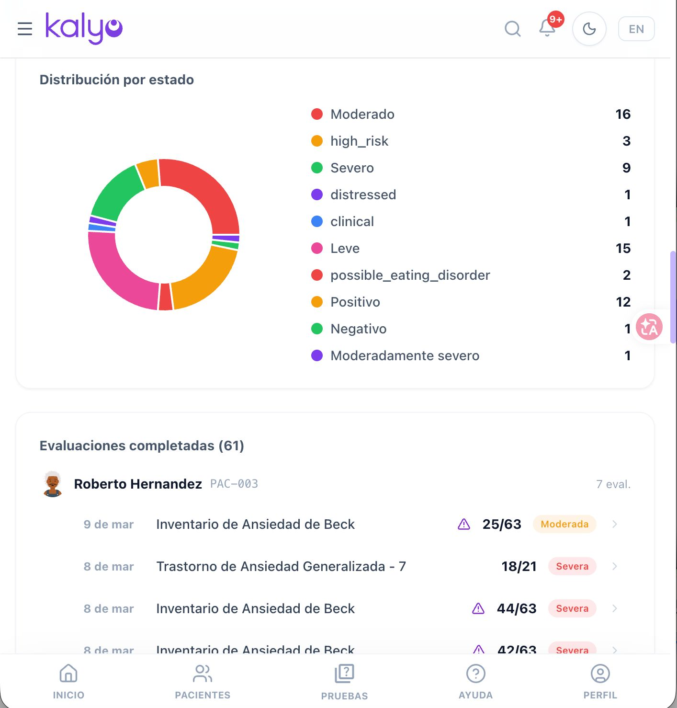
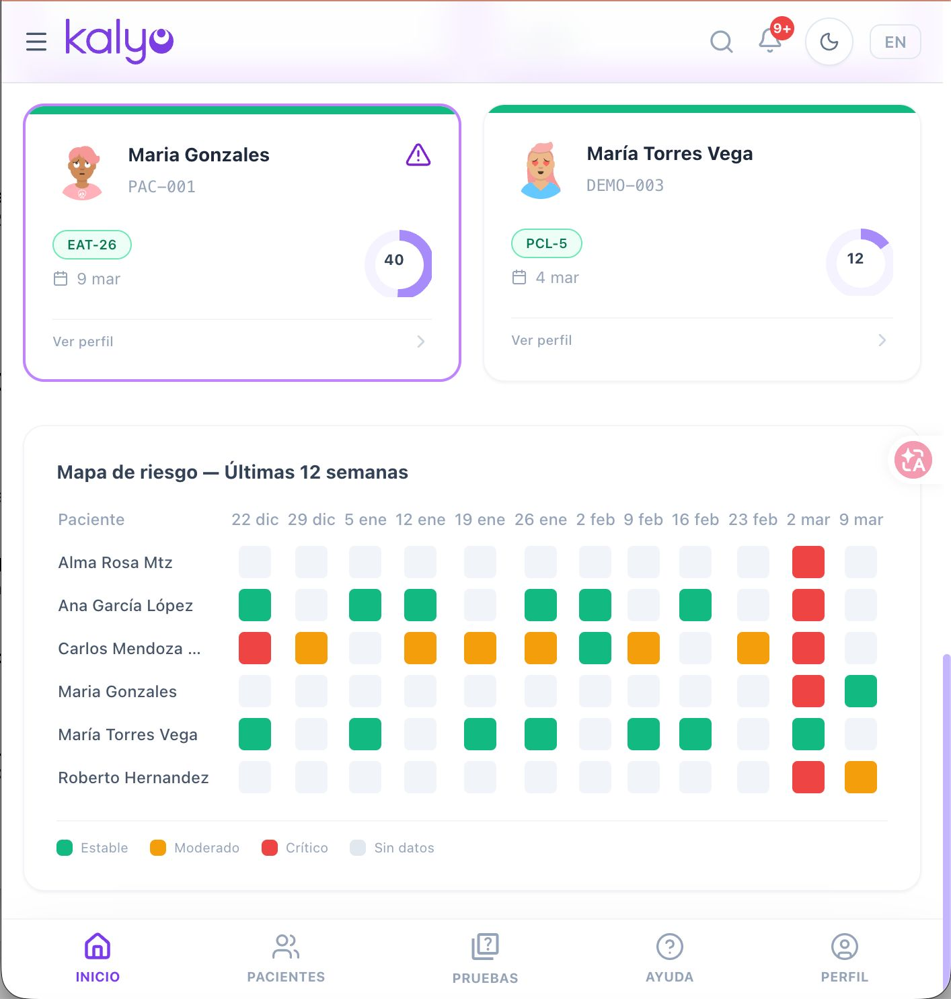
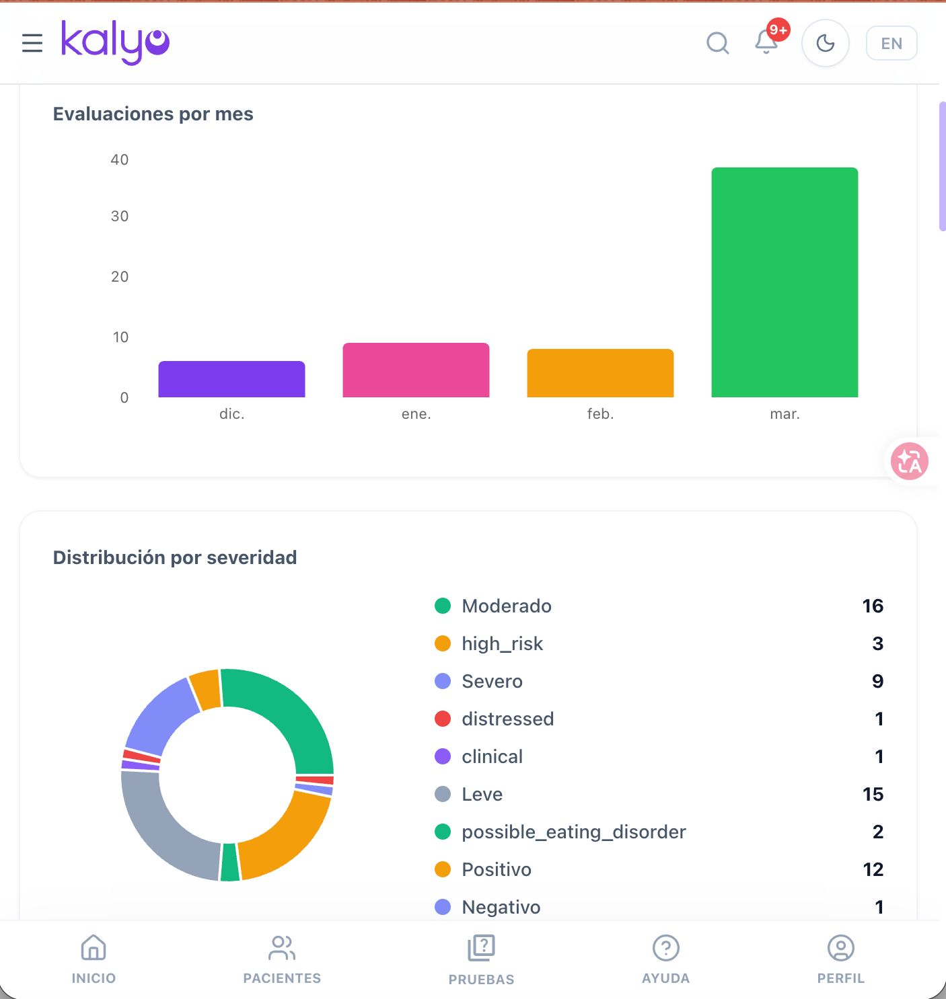
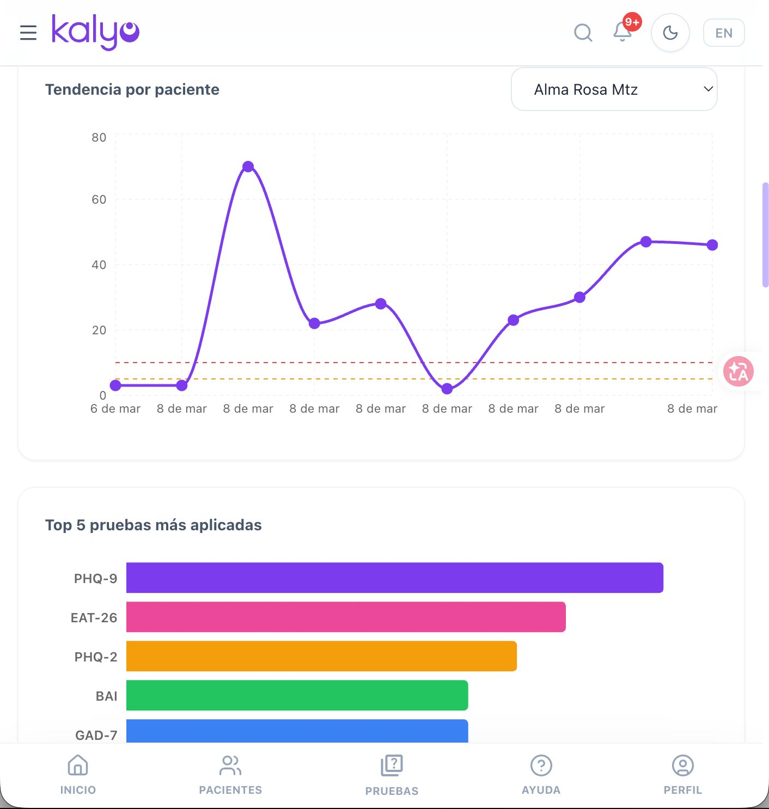

La agenda vive en mil lugares
Calendario, WhatsApp, llamadas y recordatorios manuales. Las inasistencias cuestan tiempo y ingresos cuando no hay confirmación automática.
91 tests clínicos digitales, notas SOAP automáticas y agenda con recordatorios WhatsApp. Todo en un solo lugar. Prueba 14 días gratis.

Los psicólogos pierden horas valiosas en procesos que deberían ser automáticos.
Calendario, WhatsApp, llamadas y recordatorios manuales. Las inasistencias cuestan tiempo y ingresos cuando no hay confirmación automática.
Teleconsulta en una app, notas en otra, evaluaciones en papel. Sin transcripción ni un expediente que una lo que pasó en cada sesión.
Interpretar, documentar y detectar señales clínicas a mano retrasa decisiones. Necesitas apoyo en el momento de la consulta, no después.
Kalyo no es solo una batería de tests: es donde agendas, atiendes, documentas, analizas y cobras.
Agenda, consulta expedientes y dicta notas hablando con Kaly. Manos libres en consulta.
Calendario clínico con confirmación de citas por WhatsApp para reducir inasistencias.
Videollamadas integradas con Daily.co, sin salir de Kalyo.
Graba y transcribe sesiones presenciales y virtuales automáticamente.
Sugerencias clínicas contextualizadas según historial, tests y notas del paciente.
Detección asistida de patrones en notas y sesiones para apoyar tu formulación.
Estructura notas clínicas en segundos a partir de tus sesiones y evaluaciones.
Pagos, notas de venta y control financiero de tu práctica en un solo lugar.
Evaluaciones, ejercicios y seguimiento entre sesiones desde el celular del paciente.
PHQ-9, GAD-7, BAI, PCL-5 y más con escalas DSM-5 — ver batería completa.
Una pieza clave de Kalyo, no la única: batería DSM-5 con puntuación automática, evaluaciones digitales desde el celular del paciente y reportes PDF con IA.
Explora las capacidades clave de la plataforma con ejemplos reales de la app.
Dicta, agenda y consulta expedientes sin interrumpir la sesión. Kaly ejecuta por ti.
Programa citas y envía confirmación por WhatsApp. Menos inasistencias, más tiempo clínico.
Videollamadas con Daily.co dentro de Kalyo. Sin apps externas ni enlaces sueltos.
Graba y transcribe consultas presenciales y virtuales. Base para notas y análisis con IA.
Sugerencias clínicas según historial, tests y evolución. Apoyo a tu criterio profesional.
Identifica patrones en notas y transcripciones para enriquecer tu formulación de caso.
PHQ-9, GAD-7, BAI, PCL-5 y más. El paciente responde desde su celular; tú recibes resultados al instante.
Control de pagos y notas de venta sin salir de la plataforma.
Tu asistente clínico por voz. Háblale, y Kalyo lo hace.
Incluido en el plan MaxKaly escucha tus comandos y ejecuta tareas en Kalyo: agenda, expedientes y notas, sin dejar de atender. Todo por voz, sin tocar la pantalla.
6 voces de México, Colombia, España y Argentina.
Cada pantalla pensada para fluir en la sesión clínica, no interrumpirla.



Sin curva de aprendizaje. Sin instalaciones. Funciona en cualquier dispositivo.
Regístrate gratis, agrega pacientes y configura tu agenda en minutos.
Programa citas y envía confirmación automática. Reduce inasistencias sin mensajes manuales.
Sesiones presenciales o virtuales con asistente por voz, transcripción y apoyo de IA en tiempo real.
Notas SOAP, tests digitales, reportes PDF, finanzas y portal del paciente en un solo expediente.
Psicólogos en Latinoamérica ya transformaron su práctica clínica con Kalyo.
"Kalyo me ayuda a eficientizar la aplicación y evaluación psicométrica de mis pacientes."
"Kaly me agenda citas por voz y la confirmación por WhatsApp bajó mis inasistencias. Los tests digitales son un plus."
"Los instrumentos de evaluación han reducido significativamente el tiempo dedicado a las valoraciones. Además, la transcripción automática de las sesiones me permite estar plenamente presente con el paciente, sin distraerme tomando notas"
Empieza gratis. Escala cuando tu práctica lo requiera.
50% de descuento en facturación anual
El plan anual se cobra en un solo pago. Cancela antes de renovar sin penalización.
40 artículos sobre tests validados, normativa en Colombia y México, y buenas prácticas de consulta privada.
Escala 0–27, puntos de corte y cuándo aplicarlo en tamizaje de depresión.
Normativa MéxicoRequisitos del expediente clínico y cómo cumplirlos digitalmente.
Normativa ColombiaDeberes del psicólogo, confidencialidad e historia clínica en Colombia.
Práctica clínicaColpsic, DIAN, facturación y herramientas digitales paso a paso.
Kaly por voz, agenda con WhatsApp, teleconsulta, transcripción, IA clínica y 91 tests. Agenda una demo y conoce tu consultorio digital completo.
En 20 minutos te mostramos cómo Kalyo se adapta a tu práctica clínica. Sin compromiso, sin presión.